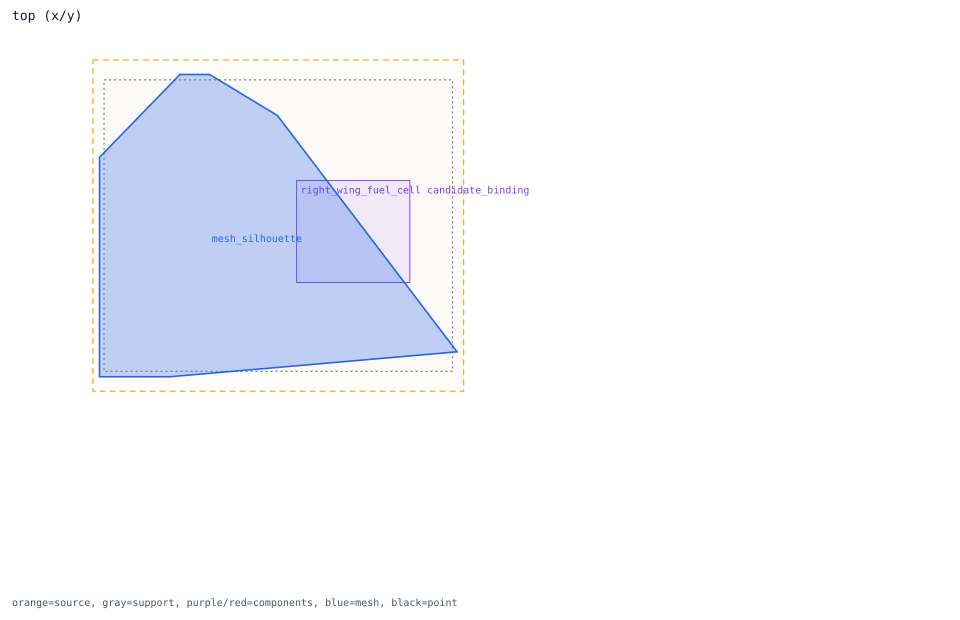
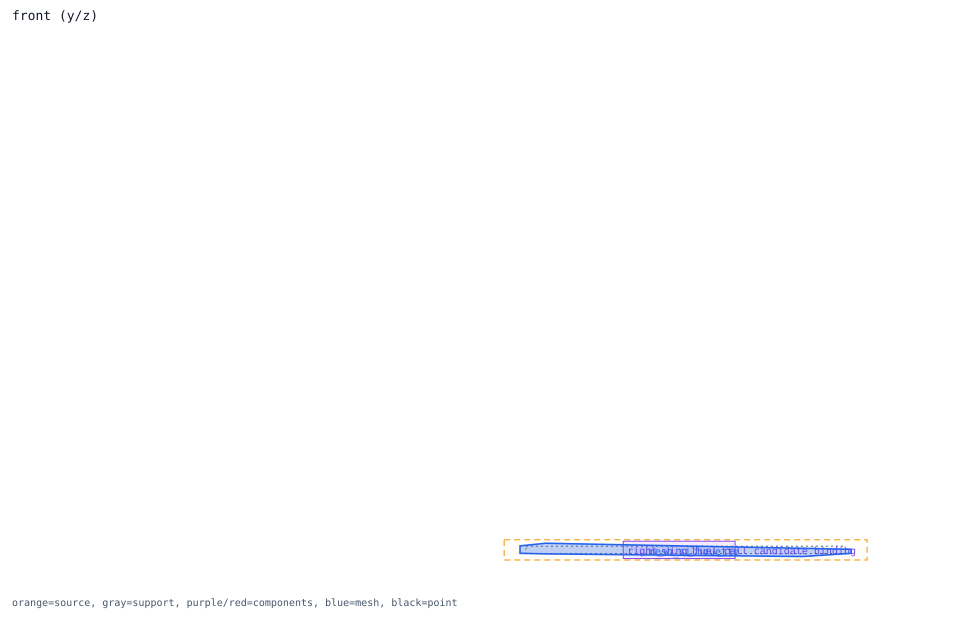

surface_right_wing_skin -> right_wing_fuel_cell
surface handoff -> right_wing
Review question
Which links for surface_right_wing_skin are clean direct receivers versus review-only cross-region semantics?
Look at
Compare clean purple/red boxes with the cross-region component names listed in the trace details.
Decision needed
Keep clean direct links separate, and keep cross-region links held or review-only until runtime ownership is explicit.
Trace Details
- surface component: surface_right_wing_skin
- outer region: right_wing
- surface role: lifting_surface
- isolated linked component: right_wing_fuel_cell
- review semantics: cross_region_semantic_hold
- runtime relation status: runtime_relation_review_only_candidate
- clean direct components: right_aileron_actuator, right_wing_fuel_cell
- cross-region semantic components: wing_spar_center
- blocked components: none
- bad geometry components: none
- review flags: cross_region_semantic_hold, expected_component_bound_elsewhere
- missing runtime links: none


